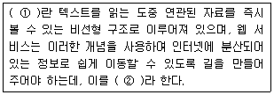
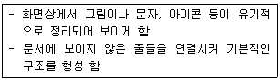
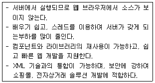
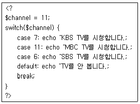
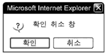
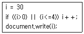

멀티미디어콘텐츠제작전문가(구) (2008-03-02 기출문제)
1과목: 멀티미디어개론
1. 국제 표준화 기구(ISO)에서 제창한 개방형 시스템 간 상호접속(OSI; Open System Interconnection) 모델은 몇 계층으로 구성되어 있는가?
- 3
- 4
- 7
- 8
(정답률: 알수없음)

2. OSI 모델 계층에서 전송계층의 주요 기능은?
- 동기화
- 노드-대-노드 전달
- 프로세스-대-프로세스 메시지 전달
- 라우팅 표의 갱신과 유지보수
(정답률: 알수없음)
3. 국제 표준화 기구가 제정한 그래픽 표준은 아니지만 "Silicon Graphics" 사가 만든 그래픽 라이브러리를 확장한 산업체 그래픽 표준은 다음 중 어느 것인가?
- VRML(Virtual Reality Modeling Language)
- JPEG(Joint Photography Experts Group)
- PHIGS(Programmer's Hierarchical Interactive Graphics System)
- OpenGL(Open Graphics Library)
(정답률: 알수없음)
4. MS사가 발표한 PC 관련 기술에 인터넷 환경을 연결시키는 것으로 웹의 내용을 더욱 활동적이고 상호동작이 가능하도록 하기 위한 목적으로 발표한 것으로 취약한 보안, 클라이언트 컴퓨터 부담 가중 및 웹브라우저 호환 결여에 따른 사용자 불편 등으로 차츰 폐기 되어 가고 있는 것은?
- MSDN
- Active-X
- PING
- XML
(정답률: 알수없음)
5. 데이터를 송수신하기 위한 일련의 규칙이나 규약과 포맷의 집합을 의미하는 말은?
- 프로토콜(protocol)
- 블루투스(Bluetooth)
- 이더넷(Ethernet)
- 패킷(Packet)
(정답률: 알수없음)
6. TCP/IP의 용어에 대한 명문 원어 표기로 맞는 것은?
- Transmission Control Port / Internet Port
- Translate Control Port / Internet Port
- Transmission Control Protocol / Internet Protocol
- Translate Control Protocol / Internet Protocol
(정답률: 알수없음)
7. 다음 중 정보검색을 위한 내용 표현을 목표로 개발된 영상 압축 표준은?
- MPEG-1
- MPEG-2
- MPEG-4
- MPEG-7
(정답률: 알수없음)
8. 다음 중에서 전자 메일의 수신을 목적으로 하는 서비스는?
- HTTP(Hyper Text Transport Protocol)
- POP(Post Office Protocol)
- SMTP(Simple Mail Transfer Protocol)
- Proxy
(정답률: 알수없음)
9. 다음 중 예술, 출판 등과 같이 정지 영상을 취급하는 분야에 널리 이용되고 있는 표준화 방식과 관련이 있는 것은?
- JPEG
- MPEG-4
- H.261
- MPEG-2
(정답률: 알수없음)
10. 다음 중 멀티미디어 타이틀에서 목표로 하는 주제를 표현하기 위한 기본단위를 무엇이라고 하는가?
- 앵커(anchor)
- 링크(link)
- 태그(tag)
- 노드(node)
(정답률: 알수없음)
11. Web casting 기술은 네트워크를 기반으로 멀티미디어 서비스를 다양하게 제공하고 있다. 사용자가 선택한 데이터를 일정시간마다 클라이언트에게 자동적으로 배달하는 형태의 데이터 전달방식을 무엇이라 하는가?
- PULL
- REMOTE
- PUSH
- STREAMING
(정답률: 알수없음)
12. 멀티미디어 정보를 디지털화 하는 이유 중 거리가 먼 것은?
- 디지털화 된 정보는 정보의 검색이 쉽기 때문이다.
- 디지털 정보는 가공과 편집이 쉽기 때문이다.
- 디지털화 된 정보는 전송이나 출력에서 열화현상이 적다.
- 디지털화 된 정보가 아날로그 정보보다 질적으로 우수하기 때문이다.
(정답률: 알수없음)
13. 멀티미디어 시스템의 입력장치로 거리가 먼 것은?
- 키보드
- 마우스
- 스캐너
- 스피커
(정답률: 알수없음)
14. 그래픽과 이미지 표현방식 중에서 화면 확대 시 화질의 저하가 발생하지 않는 방식은?
- 벡터방식
- 비트맵방식
- RGB방식
- 래스터방식
(정답률: 알수없음)
15. 인간의 움직임을 만들어 내는 가장 자연스러운 방법으로, 움직임을 직접 캡처(capture)하여 정보를 3차원으로 저장하여 사용하는 기술을 무엇이라고 하는가?
- 툰즈(ToonZ)
- 애니모(Animo)
- 역운동학(inverse Kinemat ics)
- 모션 캡처(Motion Capture)
(정답률: 알수없음)
16. ( ) 안에 적절한 용어를 순서대로 나열한 것은?

- ① 하이퍼링크 ② 하이퍼텍스트
- ① 하이퍼텍스트 ② 하이퍼링크
- ① 하이퍼카드 ② 하이퍼링크
- ① 하이퍼링크 ② 하이퍼미디어
(정답률: 알수없음)
17. 다음 중 그래픽 파일 형식에 대한 설명으로 옳지 않은 것은?
- JPEG 형식은 GIF 형식보다 다양한 색상을 나타낼 수 있다.
- JPEG는 사진 압축에 유리한 포맷으로 웹에서 표준으로 널리 사용된다.
- GIF 형식은 Animation을 표현할 수 있다.
- GIF 형식은 24bit 트루 컬러(True Color) 색상으로 표현할 수 있다.
(정답률: 알수없음)
18. 웹 브라우저에서 내부적으로 처리가 힘든 데이터 형식을 처리할 수 있도록 확장하는 프로그램은 무엇인가?
- Cookie
- Netscape
- Plug-in
- Internet Explorer
(정답률: 알수없음)
19. 다음 중 동영상 파일 포맷의 확장자에 대한 설명으로 거리가 가장 먼 것은?
- MPEG : Moving Picture Experts Group의 약자로 동영상에 대한 효율적인 전송 압축 알고리즘과 코드체계의 국제 표준 규격을 연구하기 위해 만들어졌다.
- AVI : 마이크로소프트 윈도우를 위한 비디오 지원 API인 비디오 포 윈도우(Video for Windows; VFW)의 기본 파일포맷 확장자이다.
- ASF : Apple사에서 개발한 통합 멀티미디어 지원 툴킷인퀵타임(Quick-Time)에서 지원하는 동영상 파일 포맷의 확장자이다.
- RM : 리얼플레이어용 미디어 파일의 확장자로 Real Producer를 써서 만들어 낼 수 있다.
(정답률: 알수없음)
20. 다음 중 바이러스나 해킹에 대비하여 컴퓨터 시스템을 관리하는 방법으로 거리가 가장 먼 것은?
- 윈도우즈 보안 패치를 주기적으로 실행한다.
- 최신 버전의 백신 프로그램으로 점검한다.
- 알기 쉽거나 NULL 패스워드를 피한다.
- 가능한 방화벽은 사용하지 말아야 한다.
(정답률: 알수없음)
21. 다음 중 음악이나 동영상과 같은 디지털 콘텐츠의 저작권을 보호하기 위한 기술 및 서비스로 옳은 것은?
- SSL
- PGP
- DRM
- IDS
(정답률: 알수없음)
22. 다음 중 패치 파일에 대한 설명으로 옳은 것은?
- 시스템 설치 시작 파일
- 시스템 환경 설정 정보를 기억하는 파일
- 정보시스템에 허가 받은 사용자 정보를 기억하는 파일
- 시스템에서 발생한 결함을 보완하기 위해 해당 공급업체에서 제공하는 파일
(정답률: 알수없음)
23. 인터넷의 보안 문제로부터 특정 네트워크를 격리시키는데 사용되는 시스템으로, 네트워크 출입로를 단절시키고 보안관리 범위를 정하여 제어를 효과적으로 할 수 있는 시스템은?
- SSL
- FireWall
- Pop Server
- Proxy Server
(정답률: 알수없음)
24. 다음 중 인터넷에서 가상현실 게임이나 채팅 등을 즐길 때 사용자를 대신하는 그래픽 아이콘을 지칭하는 의미로 사용되는 것은 어느 것인가?
- 아바타
- 이모티콘
- 아이콘
- 머드
(정답률: 알수없음)
25. 인터넷에 대한 설명으로 거리가 먼 것은?
- 여러 통신망들이 합쳐진 네트워크의 네트워크이다.
- 전 세계를 연결하는 컴퓨터 통신망이다.
- TCP/IP 프로토콜을 기반으로 전세계에 연결된 컴퓨터 통신망들의 집합이다.
- 유닉스 운영체제 전용의 세계적인 컴퓨터 통신망이다.
(정답률: 알수없음)
2과목: 멀티미디어기획및디자인
26. 컬러모델 중, 인간의 시각 모델과 흡사하며 색의 3속성에 따라 표현하는 것은?
- HSV모델
- CMYK모델
- RGB모델
- Index Color
(정답률: 알수없음)
27. 다음 중 그래픽 디자인(Graphic Design) 설명으로 거리가 먼 것은?
- 그래픽 디자인의 어원(語原)은 그리스어로 보다라는 뜻의 그라피코스(GraphKos)에서 왔다.
- 주로 시각적(視覺的)효과를 전달하는 과정에서 복제(複製), 양산(量産)되는 선전매체의 모든 효과를 나타낸다.
- 상업적(商業的) 판매촉진을 높이고 소비자에게 시각적인 인상을 아주 오래 기억하게끔 하는 디자인과정이다.
- 그래픽 디자인에 있어서는 원고의 작품으로서의 가치가 아니고 완성된 인쇄물의 편집, 레이아웃 등의 작품의 가치판단의 대상이 된다.
(정답률: 알수없음)
28. 다음 중 구성의 기본요소에 대한 설명으로 거리가 먼 것은?
- 방향(Direction) : 모든 점에는 방향이 있으며 이 방향은 심리적인 작용에 대해 고려되는 경우가 많다.
- 질감(Texture) : 실제로 물체의 표면이 갖는 질감을 말한다.
- 양감(Volume) : 물체의 용적이나 무게에 대한 감각 또는 입체적 감각을 말한다.
- 크기(Size) : 선, 면, 입체가 상호간에 공간간격을 가질 때 이 공간의 간격은 크기를 가리킨다.
(정답률: 알수없음)
29. 다음 질감(Texture)에 대한 설명 중 바르지 못한 것은?
- 조절적 질감이란 여러 질감을 모아서 새로운 느낌의 질감을 만들어내는 것이다.
- 시각적 질감이란 눈으로 보이는 느낌을 통하여 느껴지는 질감을 말한다.
- 질감은 디자인의 필수요소로서 물체의 조성성질을 의미한다.
- 질감은 크게 촉각적 질감과 시각적 질감으로 나뉘고, 촉각적 질감은 가용적 질감, 조절적 질감, 유기적 질감으로 나뉜다.
(정답률: 알수없음)
30. 디자인의 조건과 거리가 먼 것은?
- 합목적성
- 심미성
- 작품성
- 독창성
(정답률: 알수없음)
31. 다음 중 자연 질서의 가장 일반적이고 기본적인 형태이며 반복의 경우보다 한층 동적인 표정과 경쾌한 율동감을 주는 디자인 원리를 무엇이라고 하는가?
- 조화
- 점이
- 균형
- 통일
(정답률: 알수없음)
32. 다음 중 인터랙션 디자인(Interaction Design)의 중요 요소와 거리가 가장 먼 것은?
- 화려함
- 내비게이션(navigation)
- 정보 접근의 유형
- 상호작용을 위한 사용성 용이
(정답률: 알수없음)
33. 멀티미디어 디자인의 조건으로 적합하지 않은 것은?
- 정보의 제어가 가능하다.
- 다수의 미디어를 동시에 포함한다.
- 아날로그 신호를 주로 이용한다.
- 상호 작용성을 부여한다.
(정답률: 알수없음)
34. 멀티미디어 디자인에서 사용자의 주의를 집중시키기 위해 주로 사용하는 방법이 아닌 것은?
- 다른 색상이나 소리 첨가
- 일관성 유지를 위해 동일한 크기의 폰트 사용
- 플래시를 통한 움직임 사용
- 애니메이션 사용
(정답률: 알수없음)
35. 형태의 시각적 특성으로써 비례에 대한 설명으로 거리가 가장 먼 것은?
- 황금분할 비율은 1:3이다.
- 비례란 어느 물리적 형태의 전체 크기나 양과 비교되어서 나타나는 일부분의 크기나 양을 말한다.
- 개념적으로 비례는 시각적 질서나 균형을 결정하는데 쓰인다.
- 비례는 a:b 또는 1/2과 같은 비율 용어로 표현된다.
(정답률: 알수없음)
36. 형태적 시각요소에 대한 설명으로 가장 거리가 먼 것은?
- 개념(concept) : 마음속에서 지각되는 어떤 아이디어나 생각, 이론 또는 견해
- 변환(transformation) : 어떤 형상이나 형태, 움직임을 그리거나 상징화
- 착시(illusion) : 틀리거나 잘못된 지각으로, 실제적 존재와 감각을 통해 인식하는 것과의 불일치
- 윤곽(contour) : 형태를 한정하는 꼭지점, 가장자리 또는 외곽선
(정답률: 알수없음)
37. 마케팅 믹스란 마케팅 효과를 극대화시키기 위한 작업이다. 다음 중 마케팅 믹스의 구성요소가 아닌 것은?
- 제품(Product)
- 가격(Price)
- 촉진(Promotion)
- 서비스(Service)
(정답률: 알수없음)
38. 인터페이스 디자인 중 아이콘이나 사인(sign) 디자인에 대한 설명 중 거리가 먼 것은?
- 아이콘의 형태는 가능하면 단순, 명료하게 하여 시각적으로 쉽게 인식할 수 있어야 한다.
- 실생활에서의 관례나 행동양식, 형태 등을 비유적으로 이용한 아이콘은 사용자들의 반응을 쉽게 유도할 수 있다.
- 비슷한 역할을 하는 기능들은 가능한 동일한 그룹으로 묶는 것이 사용자를 편안하게 한다.
- 사인(Sign)의 경우 비표준형을 사용하며 개성 있고, 특색 있는 인터페이스가 되도록 한다.
(정답률: 알수없음)
39. 다음 중 사용자 인터페이스 디자인을 위한 조형원리에 해당되지 않는 것은?
- 통일감과 조화
- 강조
- 균형
- 분류
(정답률: 알수없음)
40. 사용자 인터페이스 디자인 설계 시 고려사항이 아닌 것은?
- 사용자에게 시스템에 대한 통제력을 느낄 수 있도록 한다.
- 설계자는 인간의 인지구조에 대한 기본적인 이해와 함께 이를 반영해야 한다.
- 독특한 활자체를 사용하고 전문화를 위한 특수용어를 많이 사용하며 사용자에게 한 번에 최대한 많은 수의 선택을 할 수 있도록 설계한다.
- 사용자가 어떤 부분이든지 항상 접근 할 수 있도록 기능들을 설정하며 그 기능들을 같은 장소에 같은 방식으로 재연될 수 있도록 한다.
(정답률: 알수없음)
41. 인터페이스 디자인에 있어서 크게 고려할 사항이 아닌 것은?
- 창의성
- 일관성
- 독립성
- 사용편의성
(정답률: 알수없음)
42. 길이와 너비를 가지며, 넓이는 있으나 두께는 없는 것으로 위치와 방향을 가지는 선의 집합을 무엇이라 하는가?
- 점
- 선
- 면
- 입체
(정답률: 알수없음)
43. 다음 구도에 대한 설명으로 거리가 가장 먼 것은?
- 사선구도 : 동적변화
- 수직구도 : 고요하고 엄숙함
- 수평구도 : 평화, 넓이를 느낌
- 대각선구도 : 동적이며 안정된 느낌
(정답률: 알수없음)
44. 다음 중 점을 생성하기 위한 방법이 아닌 것은?
- 입체와 면의 고차
- 선과 선의 교차
- 선의 양쪽 끝
- 면과 선의 교차
(정답률: 알수없음)
45. 이미지 보정 작업의 설명으로 거리가 먼 것은?
- 망점 흐리기 : 모아레(Moire) 현상을 방지하기 위한 작업이다.
- 노이즈삭제 : 클로닝(cloning)도구를 활용하면 이미지 노이즈를 없앨 수 있다.
- 크로핑(Cropping) : 작업의 효율성을 높이기 위해서 이미지 보정의 첫 번째 단계에서 수행한다.
- 대비조절 : 멀티미디어에서 활용될 이미지는 대비가 조금 더 약한 것이 최종적으로 더 좋아 보인다.
(정답률: 알수없음)
46. 스토리보드에 관한 설명으로 가장 적당한 것은?
- 플로우차트(Flowchart)와 같이 정보디자인을 위해 정보 리스트를 나열하는 것이다.
- 정보의 전체적인 제어 흐름만을 명시한다.
- 각 요소들의 역할과 각 페이지의 내용구성 및 장면의 내용 등을 나타낸다.
- 인하된 사진으로만 제작하여야 한다.
(정답률: 알수없음)
47. 다음 중 웹 페이지 레이아웃에 대한 설명으로 거리가 가장 먼 내용은?
- 미적인 조형구성, 전체적인 통일과 조화만을 고려해야 한다.
- 형태의 명백하고 조직적인 정보전달, 시각의 주목성과 가독성을 고려해야 한다.
- 커뮤니케이션을 위해서 꼭 필요한 시각요소만을 포함하거나 혼란을 일으킬 수 있는 요소를 최소화시켜 정보의 의미를 명확하게 한다.
- 멀티미디어 레이아웃은 시각적인 측면과 함께 기능적인 측면도 대단히 중요하다.
(정답률: 알수없음)
48. 다음 중 타이포그래피의 구성요소로 거리가 가장 먼 것은?
- 그룹
- 세리프와 산세리프
- 자간
- 어간
(정답률: 알수없음)
49. 다음 중 픽토그램에 대한 설명으로 옳은 것은?
- 기업이 상품을 생산하여 판매하고자 할 때 그 상품에 사용하는 마크를 말한다.
- 기업, 회사의 명칭이나 이름을 상징성 있게 디자인 한 것을 말한다.
- 행사, 캠페인 등의 상징성 있는 휘장을 말한다.
- 세계 공통으로 사용할 수 있는 그림 문자로서 표시의 기능을 갖는다.
(정답률: 알수없음)
50. 레이아웃의 구성원리 중 아래 설명에 해당하는 원리는?

- 용이성
- 그리드
- 비례
- 균형감
(정답률: 알수없음)
3과목: 멀티미디어저작
51. 데이터베이스에서 데이터 조작어(DML)에 포함되지 않는 것은?
- INSERT
- CREATE
- UPDATE
- SELECT
(정답률: 알수없음)
52. 다음 중 데이터베이스 객체에 권한을 부여하는 의미로 사용되는 명령어는 어느 것인가?
- CREATE
- ALTER
- GRANT
- REVOKE
(정답률: 알수없음)
53. 웹 페이지를 구축 할 때 가장 먼저 해야 할 과정은?
- 내용의 구성
- 주제와 대상의 결정
- 프로그래밍
- 웹페이지 작성 준비
(정답률: 알수없음)
54. 다음 중 ASP에서 사용되는 객체의 종류가 아닌 것은?
- Response 객체
- Application 객체
- Server 객체
- Client 객체
(정답률: 알수없음)
55. 다음에 설명하는 내용과 가장 관련이 깊은 것은?

- ASP
- JSP
- PHP
- Perl
(정답률: 알수없음)
56. XML 및 SGML, HTML 등의 표준 규격을 만들고 관리하는 국제기구는?
- IEEE
- ISOC
- InterNIC
- W3C
(정답률: 알수없음)
57. 다음 중 저작 도구와 스크립트(script) 언어가 서로 맞지 않는 것은?
- 디렉터(Director) - LingoScript
- 하이퍼카드(Hypercard) - HyperTalk
- 툴북(Toolbook) - OpenScript
- 오쏘웨어(Authorware) - AScript
(정답률: 알수없음)
58. HTML에서 ＜IMG＞태그의 속성에 속하지 않는 것은?
- ALT
- VALIGN
- VSPACE
- BORDER
(정답률: 알수없음)
59. ＜a href＞태그에서 새 창에 target 페이지를 띄워주는 속성은?
- _self
- _parent
- _top
- _blank
(정답률: 알수없음)
60. 브라우저가 가지고 있는 여러 기능으로 웹 페이지를 좀 더 능동적으로 만들 수 있는 HTML과 CSS, JavaScript의 결합 언어는?
- PHP
- DHTML
- XML
- SGML
(정답률: 알수없음)
61. 플래시 플레이어에서 독립실행 프로젝트 실행 및 풀스크린, 닫기 기능 등을 부여해줄 수 있는 액션은?
- LoadVariables
- fscommand
- setProperty
- tellTarget
(정답률: 알수없음)
62. 플래시 무비를 제작하였다. 이 무비를 재생할 때 사용자가 임의의 크기로 조정을 하였을 경우 무비의 내용이 제대로 전달되지 않는다. 이를 방지하고자 하는데 다음 중 가장 올바른 방법은?
- 프레임 액션에 fscommand("fullscreen", true)를 코딩한다.
- 프레임 액션에 fscommand("allowscale", true)를 코딩한다.
- 프레임 액션에 fscommand("fullscreen", false)를 코딩한다.
- 프레임 액션에 fscommand("allowscale", false)를 코딩한다.
(정답률: 알수없음)
63. 플래시의 액션스크립트는 제한적인 객체지향 개념을 도입한 스크립트 언어이다. 다음 중 액션스크립트의 표현방식으로 잘못된 것은?
- 오브젝트.메소드()
- 오브젝트.속성
- 오브젝트.변수
- 오브젝트.심볼
(정답률: 알수없음)
64. 플래시 액션스크립트에서 산술 연산자의 설명이 잘못된 것은?
- ＞ : 왼쪽 값이 오른쪽 값보다 큰지 비교
- ＜= : 왼쪽 값이 오른쪽 값보다 작거나 같은지 비교
- = : 왼쪽 값이 오른쪽 값과 같은지 비교
- != : 왼쪽 값이 오른쪽 값과 같지 않은지 비교
(정답률: 알수없음)
65. 다음 액션스크립트 중 데이터를 플래시 무비에서 서버측 응용프로그램으로 전송하는 명령은?
- loadData
- sendData
- getURL
- onClipEvent(data)
(정답률: 알수없음)
66. 스크립트 언어에 대한 설명으로 거리가 가장 먼 것은?
- 디자인과 기능성을 겸비한 대화형 웹 사이트를 구축하기 위하여 HTML 스크립트 내에 포함시키는 일종의 프로그래밍 언어이다.
- 컴퓨터의 프로세서나 컴파일러가 아닌 다른 프로그램에 의해서 번역되고 수행되는 명령문의 집합체이다.
- 스크립트 언어는 스스로 컴파일 과정을 거치기 때문에 신속한 개발, 유지, 보수가 가능하고 테스트와 디버깅에 의해 소요되는 시간을 줄일 수 있다.
- 스크립트 언어는 매번 번역되어야 하기 때문에 C／C＋＋와 같은 컴파일러 언어에 비해 그 기증이 다소 제한적이다.
(정답률: 알수없음)
67. XML의 유효한 문서(Valid XML)를 위해 문서의 구조를 정의해 놓은 것은 무엇이라고 하는가?
- DTS
- DTD
- DTC
- STS
(정답률: 알수없음)
68. XML 문서에서 서로 다른 문서를 하나의 문서로 합치고자 할 때 발생되는 태그 중복에 대한 문제점을 해결하고자 제안된 방법은?
- DOM
- NameSpace
- SAX
- XPath
(정답률: 알수없음)
69. 다음 PHP 기본 문법에 대한 설명 중 거리가 먼 것은?
- 조건문을 포함한 PHP의 구문 뒤에는 반드시 세미콜론(;)을 붙인다.
- PHP에서 내용을 출력할 때에는 echo 함수를 사용한다.
- 문자열을 출력할 경우 꼭 큰따옴표나 작은따옴표를 붙인다.
- 변수명은 대소문자를 구분한다.
(정답률: 알수없음)
70. 다음 PHP switch문의 출력 결과는?

- MBC TV를 시청합니다.
- MBC TV를 시청합니다. SBS를 시청합니다.
- MBC TV를 시청합니다. SBS를 시청합니다. TV를 안 봅니다.
- KBS TV를 시청합니다.
(정답률: 알수없음)
71. 자바스크립트의 특징이 아닌 것은?
- 번역과 실행이 동시에 이루어진다.
- 클래스의 정의 또는 상속이 없다.
- 소스코드는 HTML 태그에 포함된다.
- 변수 타입을 선언해야 한다.
(정답률: 알수없음)
72. 자바스크립트의 내장형 함수로서 주어진 값이 숫자인지 문자인지를 알아내는 함수로 주어진 값이 문자이면 참(true), 숫자이면 거짓(false)값을 리턴 하는 함수는?
- eval()
- parseInt()
- isNaN()
- escape()
(정답률: 알수없음)
73. 자바스크립트에서 배열의 요소개수를 10개로 선언하는 방법은?
- sun_array = new Array(10);
- sun_array = Array(10);
- sun_array = new Array("10");
- sun_array = Array("10")
(정답률: 알수없음)
74. 다음 그림과 같은 창을 출력해주는 자바스크립트 함수는?

- write();
- alert();
- print();
- confirm();
(정답률: 알수없음)
75. 다음 자바스크립트 조건문에서 출력되는 값은 얼마인가?

- 30
- 31
- 32
- 60
(정답률: 알수없음)
4과목: 멀티미디어제작기술
76. 우리나라에서 채택하고 있는 아날로그 TV 표준 방식은?
- NTSC(National Television System Committee)
- PAL(Phase Alternative by Line)
- SECAM(SEquential Couleur A Memoire)
- VOD(Video on Demand)
(정답률: 알수없음)
77. 1998년 W3C 사에서 제작되었으며 멀티미디어 클립이 재생되는 순서, 시간 등을 조정, 통합하기 위해 제정된 마크업 언어는?
- SMIL
- WMT
- ASF
- ASX
(정답률: 알수없음)
78. Microsoft 사와 IBM 사가 PC 환경에서 사운드 표준 포맷으로 공동 개발한 사운드 포맷은?
- AU
- MID
- FMI
- WAV
(정답률: 알수없음)
79. 다음 중 이동보상 압축기법을 이용하여 시간적 중복을 제거하고, 정지화상의 DCT 압축기술을 이용하여 공간적 중복을 제거하는 압축기술 방법은 무엇인가?
- H.261
- MPEG
- JPEG
- Intel DVI
(정답률: 알수없음)
80. 다음 중 동영상의 확장자 종류가 아닌 것은?
- AVI
- MOV
- ASF
(정답률: 알수없음)
81. 다음의 디지털 오디오 파일 형식들 중, MPEG을 이용한 압축방식을 적용하고 있는 것은?
- mp3
- wav
- au
- vqf
(정답률: 알수없음)
82. GIF(Graphic Interchange Format)에 대한 설명으로 거리가 먼 것은?
- Illustrator로 제작된 그래픽 파일의 경우 압축효과가 크다.
- 압축방식은 LZW(Lempel-Ziv-Welch) 알고리즘을 사용한다.
- 색상정보는 그대로 두고 압축을 하기 때문에 사진 압축에 가장 유리한 방법이다.
- 미국 Compuserve사에서 자체 개발 서비스를 통해 이미지를 전송할 목적으로 개발되었다.
(정답률: 알수없음)
83. 사운드에서 진폭(Amplitude)에 대한 설명으로 가장 적합한 것은?
- 사운드 파형의 반복 횟수로 측정단위로는 Hz가 사용된다.
- 같은 음의 높이와 크기에 따라 고유한 소리의 특징을 의미한다.
- 사운드가 일정한 시간 간격마다 동일한 모형으로 반복되는 것을 의미한다.
- 사운드 파형의 기준선에서 최고점까지의 거리를 의미하며 소리의 크기와 관련이 있다.
(정답률: 알수없음)
84. 산만하게 촬영된 영상 및 음성을 편집대본 순서대로 잘라 붙이는 선형 편집 기법은?
- 프리롤 편집(Pre roll editing)
- 인서트 편집(Insert editing)
- A/B롤 편집(A/B roll editing)
- 어셈블 편집(Assemble editing)
(정답률: 알수없음)
85. 사운드를 구성하는 3요소가 아닌 것은?
- 진폭(amplitude)
- 음색(tone color)
- 주파수(frequency)
- 미디(midi)
(정답률: 알수없음)
86. 아날로그 음을 디지털화하는 과정에서 미세한 잡음(white noise) 성분을 인위적으로 집어넣는 것을 무엇이라고 하는가?
- 지터(Jitter)
- 디더링(Dithering)
- 앨리어싱(Aliasing)
- 샘플링(Sampling)
(정답률: 알수없음)
87. 다음 방법 중 3D 프로그램의 제작과정 중 제작된 모델을 보다 사실적으로 묘사하기 위해 2차원 상에서 만든 이미지 등을 입혀서 구현하는 방법은?
- 매핑(Mapping)
- 모핑(Morphing)
- 솔루션(Solution)
- 스키닝(Skinning)
(정답률: 알수없음)
88. 3D 애니메이션에서 보다 현실적인 느낌을 완성하기 위해서는 오브젝트를 중심으로 비, 바람, 눈, 연기, 구름 등의 자연 현상이 가미되어야 하는데, 다음 중 3D Max에서 자연현상과 무리현상을 만들어 주는 시스템을 무엇이라고 하는가?
- 맵핑(Mapping)
- 파티클(Particle)
- 스페이스워프(SpaceWarps)
- 다이나믹스(Dynamics)
(정답률: 알수없음)
89. 다음 중 점토를 사용하는 애니메이션을 무엇이라 하는가?
- 셀 애니메이션
- 입자 시스템
- 로토스코핑
- 클레이 애니메이션
(정답률: 알수없음)
90. 애니메이션을 구현하는 기법 중에서 키프레임(Key Frame)을 설정하게 되면, 키프레임 사이의 움직임은 컴퓨터가 자동으로 생성하는 기법을 무엇이라 하는가?
- 패스(Path)
- 트위닝(tweening)
- 그라비티(Gravity)
- 키네마틱스(Kinematics)
(정답률: 알수없음)
91. 다음 중 한 장의 영상을 뜻하며 영상의 시간적 최소 단위를 나타내는 것은?
- 픽셀
- 해상도
- 프레임
- 데이터
(정답률: 알수없음)
92. 비디오를 압축할 때 고려사항이 아닌 것은?
- 초당 필요 frame 수
- 압축률에 따른 화질의 변화
- 압축 및 복원 속도
- 플러그인 적용여부
(정답률: 알수없음)
93. 캠코더로 찍은 테잎의 내용을 필름 형태로 전환시키는 작업을 무엇이라고 하는가?
- 텔레시네(Telecine)
- 키네스코프(Kinescope)
- 씨네룩(Cinelook)
- 더빙(Dubbing)
(정답률: 알수없음)
94. 다음 중 디지털 비디오의 장점이 아닌 것은?
- 압축으로 정보량을 크게 줄일 수 있다.
- 디지털화에 의한 화질 왜곡이 전혀 발생하지 않는다.
- 신호의 다중화로 전송회선을 절약할 수 있다.
- 노이즈와 왜곡에 대해서 강한 면역성을 가진다.
(정답률: 알수없음)
95. 다음 중 디지털 카메라 촬영에서 “비네팅(Vignetting) 현상”에 대해서 올바르게 설명한 것은?
- 촬영 이미지의 네모서리 부분이 둥그런 모양으로 어둡게 되는 현상이다.
- 화이트밸런스가 제대로 맞지 않아 화면이 하얗게 번지는 현상이다.
- 외부 플래시 사용에서 카메라와의 동기가 맞지 않아 어둡게 나오는 현상이다.
- 편광필터 사용 시 잘못 사용하여 화면에 사선으로 줄이 가는 현상이다.
(정답률: 알수없음)
96. 컬러 모델 중 RGB 모델에 대한 설명으로 거리가 먼 것은?
- 빛의 삼원색인 Red, Green, Blue가 기본이 된다.
- 검은색에서 시작하는 값들을 더함으로써 다른 칼라들이 생기기 때문에 가산모델(Additive Model)이라고도 한다.
- 컬러 모델을 나타내는 3차원 좌표축에서 원점(0,0,0)은 흰색을 나타낸다.
- CRT 모니터 등 빛의 성질을 이용하는 컬러를 표현하는 곳에 많이 사용된다.
(정답률: 알수없음)
97. 비선형 편집방식에 대한 설명으로 옳지 않은 것은?
- 다양한 제작기법의 활용이 가능하다.
- 원하는 부분부터 편집이 가능하고 재수정도 쉽게 할 수 있다.
- 작업 도중에 다른 시스템으로의 이동 및 다른 프로그램을 편집하기 위한 끼워 넣기가 어렵다.
- 2대 이상의 녹화기를 이용해서 테이프로 더빙하면서 편집한다.
(정답률: 알수없음)
98. 촬영기법 중 카메라가 좌에서 우로, 혹은 우에서 좌로 이동하면서 촬영하는 기법은?
- 틸팅(Tilting)
- 패닝(Panning)
- 주밍(Zooming)
- 스테디샷(Steady shot)
(정답률: 알수없음)
99. Chroma Key 합성법에 대한 설명으로 거리가 먼 것은?
- Chroma 신호의 색상차를 이용하는 합성방법이다.
- 정확한 전경화상의 생성(키 화상의 생성을)을 위해 조명에 상당한 주의를 기울여야한다.
- Matt의 칼라는 특정한 색상과 채도를 가진 Red를 주로 사용한다.
- 배경화면의 일부분에 또 하나의 영상을 겹치게 하여 새로운 화면을 만들어내는 특수영상효과이다.
(정답률: 알수없음)
100. CRT 모니터의 격행주사(non-interlace) 방식에 대한 설명 중 거리가 먼 것은?
- 한 장의 화상을 두 장의 거친 화상으로 나누어 주사한다.
- 화면이 깜빡거리는 플릭커 현상이 일어날 수도 있다.
- 프로그래시브 스캔(Progressive Scan) 방식이라고도 한다.
- 전자총의 짝홀수의 주사선을 번갈아가면서 뿌려주는 방식이다.
(정답률: 알수없음)